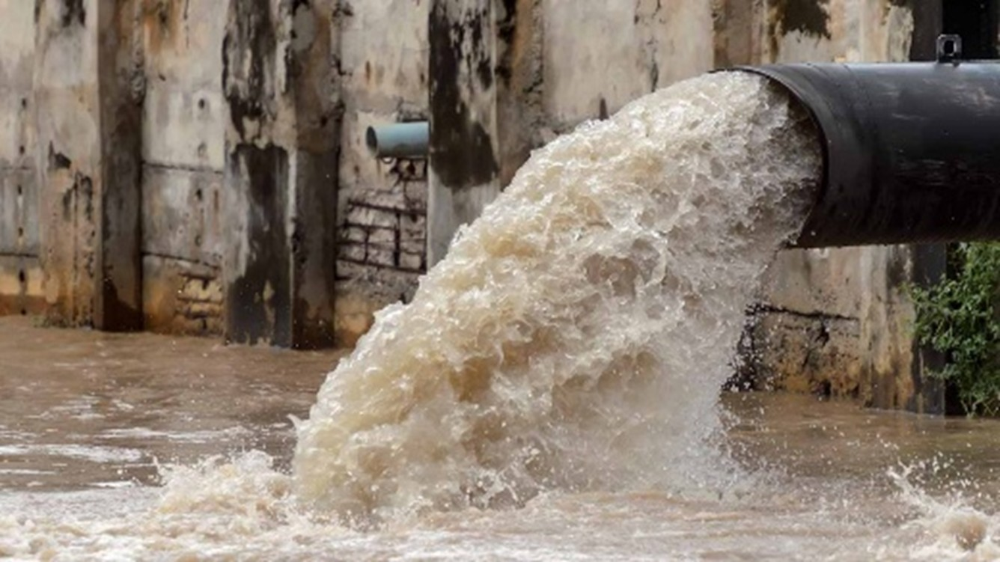

Protéger notre source de vie : l’eau, et lutter contre sa pollution est une des plus importantes tâches de l’humanité entière, qui ne tolère aucune négligence. Mais en même temps, on sait tous qu’il est impossible de changer l’ordre mondial d'un claquement de doigt. Voici quelques propositions des actions qu’il faut mettre en œuvre dès que possible.
La sensibilisation du public est indéniablement essentielle pour effectuer une utilisation responsable de l'eau. Il est important d’informer les individus aux problèmes liés à la pollution de l'eau, en les éduquant sur les sources de pollution et les actions quotidiens pour contribuer à la préservation de cette ressource vitale.
Les campagnes d'information et d'éducation doivent être réalisés à travers des médias sociaux et traditionnelles, et notamment des programmes dans les écoles. Il est important d’insister sur l'importance de l'eau, les conséquences de sa pollution sur la santé humaine et l'environnement, ainsi que les actions individuelles que chacun peut prendre pour réduire cette pollution.
Ci-contre se trouve une affiche préparée par moi, pour un projet de groupe dans le cadre du chapitre de l’écologie du cours de civilisation.
Les gouvernements doivent créer et mettre en place des règlements rigoureuses et strictement appliquées pour lutter contre la pollution de l'eau. Ces lois pourraient inclure l’interdiction ou la restriction des déchets industriels, des restrictions sur l'utilisation des pesticides et des produits chimiques dans l'agriculture, ainsi que des réglementations sur la gestion des eaux usées. Il est crucial que ces lois soient appliquées de manière stricte et que des sanctions soient prévues en cas de non-respect, pour imposer l'obéissance du public.
Les zones humides, jouent un rôle crucial dans la filtration des matériaux contaminants et la préservation de la biodiversité dans plusieurs écosystèmes. Il est tellement important de protéger ces écosystèmes. Des mesures de conservation doivent être réalisés pour protéger ces zones et restaurer celles qui ont été déjà endommagées.
Il faut absolument éviter leur assèchement, leur drainage ou leur conversion à d'autres utilisations comme l'urbanisation ou l'agriculture intensive. De plus, l’urbanisation des zones humides pose un danger dans les cas de tremblements de terre :
« Dans un sol humide et meuble, les ondes sismiques résonnent et se liquéfient, provoquant l'effondrement du bâtiment ou l'inclinaison du sol. Quelle que soit la solidité du bâtiment, il résonnera et s'effondrera en raison des différentes fréquences produites par le sol meuble. » [25]
 Les déchets, particulièrement ceux de nature plastique, sont une grave menace pour les écosystèmes aquatiques. Une gestion responsable des déchets est essentiel. Il est important d’encourager le recyclage. La collecte et le traitement appropriés des déchets solides et des eaux usées sont également essentiels pour éviter qu'ils ne se retrouvent dans les cours d'eau.